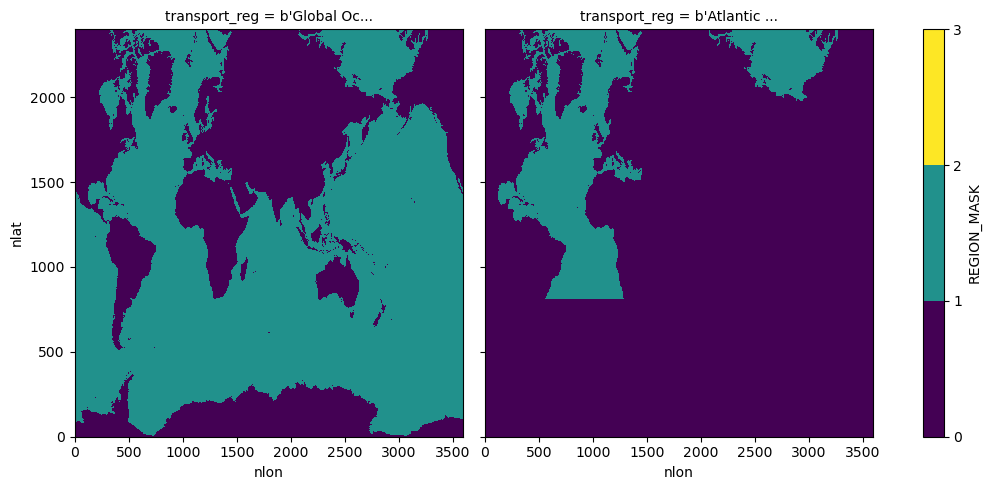

POP MOC(z) for 0.1-degree
Contents
POP MOC(z) for 0.1-degree#
Input Data: Monthly POP output timeseries files
Output Data: Monthly mean AMOC z timeseries
Description: Computes MOC(z) offline from POP history files using simple xhistogram binning.
Date: February 2023
Creator: Steve Yeager (https://github.com/sgyeager/POP_MOC/blob/main/notebooks/pop_MOCz_0.1deg.ipynb)
Updated: Teagan King, February 2023
Note: To use the MOCutils, a user will need to clone the POP_MOC repository (https://github.com/sgyeager/POP_MOC) and install MOCutils by going to the POP_MOC directory and running pip install -e . --user.
%load_ext autoreload
%autoreload 2
import xarray as xr
import numpy as np
import cftime
import copy
import glob
import dask
from xhistogram.xarray import histogram
import matplotlib.pyplot as plt
%matplotlib inline
from MOCutils import popmoc
import pop_tools
The autoreload extension is already loaded. To reload it, use:
%reload_ext autoreload
from dask.distributed import wait
dask.__version__
'2022.7.0'
Dask Cluster#
# Close out Dask Cluster and release workers:
# cluster.close()
# client.close()
# TODO: optimize dask resources
def get_ClusterClient():
import dask
from dask_jobqueue import PBSCluster
from dask.distributed import Client
cluster = PBSCluster(
cores=1,
memory='10GB',
processes=1,
queue='casper',
resource_spec='select=1:ncpus=1:mem=10GB',
account='P93300313',
walltime='06:00:00',
interface='ib0',)
dask.config.set({
'distributed.dashboard.link':
'https://jupyterhub.hpc.ucar.edu/stable/user/{USER}/proxy/{port}/status'
})
client = Client(cluster)
return cluster, client
cluster, client = get_ClusterClient()
cluster.scale(36)
/glade/u/home/tking/.conda/envs/ipogs/lib/python3.10/site-packages/distributed/node.py:179: UserWarning: Port 8787 is already in use.
Perhaps you already have a cluster running?
Hosting the HTTP server on port 33126 instead
warnings.warn(
cluster
PBSCluster
c908ef4e
| Dashboard: https://jupyterhub.hpc.ucar.edu/stable/user/tking/proxy/33126/status | Workers: 0 |
| Total threads: 0 | Total memory: 0 B |
Scheduler Info
Scheduler
Scheduler-aeebc7a0-6083-42a2-bdf0-0ba18135d276
| Comm: tcp://10.12.206.48:37194 | Workers: 0 |
| Dashboard: https://jupyterhub.hpc.ucar.edu/stable/user/tking/proxy/33126/status | Total threads: 0 |
| Started: Just now | Total memory: 0 B |
Workers
Read in history file data & MOC template file#
def time_set_midmonth(ds, time_name, deep=False):
"""
Return copy of ds with values of ds[time_name] replaced with mid-month
values (day=15) rather than end-month values.
"""
year = ds[time_name].dt.year
month = ds[time_name].dt.month
year = xr.where(month==1,year-1,year)
month = xr.where(month==1,12,month-1)
nmonths = len(month)
newtime = [cftime.DatetimeNoLeap(year[i], month[i], 15) for i in range(nmonths)]
ds[time_name] = newtime
return ds
def preprocessor_wvel(ds0):
keepvars = ['WVEL']
d0 = ds0[keepvars]
d0 = time_set_midmonth(d0,'time')
return d0
def preprocessor_vvel(ds0):
keepvars = ['VVEL']
d0 = ds0[keepvars]
d0 = time_set_midmonth(d0,'time')
return d0
# fdir = '/glade/campaign/cgd/oce/people/whokim/csm/g.e21.GRYF_0304.TL319_t13.003/ocn/hist/'
fdir = '/glade/campaign/collections/cmip/CMIP6/iHESP/BHIST/HR/B.E.13.BHISTC5.ne120_t12.sehires38.003.sunway/ocn/proc/tseries/month_1/'
# TODO: this script takes *history* files as input
# TODO: loop through file years?
fin_wvel = fdir + '*WVEL*.nc'
fin_vvel = fdir + '*VVEL*.nc'
ds_wvel = xr.open_mfdataset(fin_wvel,combine='by_coords',
preprocess=preprocessor_wvel,
chunks={'time':1,'nlon':300},
coords="minimal",compat="override",data_vars="minimal",
parallel=True)
ds_vvel = xr.open_mfdataset(fin_vvel,combine='by_coords',
preprocess=preprocessor_vvel,chunks={'time':1,'nlon':300},
coords="minimal",compat="override",data_vars="minimal",
parallel=True)
ds_grid = pop_tools.get_grid('POP_tx0.1v3')
fmoc = '/glade/u/home/yeager/analysis/python/POP_MOC/moc_template.nc'
ds_moctemp = xr.open_dataset(fmoc)
ds_vvel.VVEL
<xarray.DataArray 'VVEL' (time: 1883, z_t: 62, nlat: 2400, nlon: 3600)>
dask.array<concatenate, shape=(1883, 62, 2400, 3600), dtype=float32, chunksize=(1, 62, 2400, 300), chunktype=numpy.ndarray>
Coordinates:
* z_t (z_t) float32 500.0 1.5e+03 2.5e+03 ... 5.625e+05 5.875e+05
ULONG (nlat, nlon) float64 dask.array<chunksize=(2400, 300), meta=np.ndarray>
ULAT (nlat, nlon) float64 dask.array<chunksize=(2400, 300), meta=np.ndarray>
TLONG (nlat, nlon) float64 dask.array<chunksize=(2400, 300), meta=np.ndarray>
TLAT (nlat, nlon) float64 dask.array<chunksize=(2400, 300), meta=np.ndarray>
* time (time) object 1850-01-15 00:00:00 ... 2006-11-15 00:00:00
Dimensions without coordinates: nlat, nlon
Attributes:
long_name: Velocity in grid-y direction
units: centimeter/s
grid_loc: 3221
cell_methods: time: meands_wvel.WVEL
<xarray.DataArray 'WVEL' (time: 1883, z_w_top: 62, nlat: 2400, nlon: 3600)>
dask.array<concatenate, shape=(1883, 62, 2400, 3600), dtype=float32, chunksize=(1, 62, 2400, 300), chunktype=numpy.ndarray>
Coordinates:
* z_w_top (z_w_top) float32 0.0 1e+03 2e+03 ... 5.25e+05 5.5e+05 5.75e+05
ULONG (nlat, nlon) float64 dask.array<chunksize=(2400, 300), meta=np.ndarray>
ULAT (nlat, nlon) float64 dask.array<chunksize=(2400, 300), meta=np.ndarray>
TLONG (nlat, nlon) float64 dask.array<chunksize=(2400, 300), meta=np.ndarray>
TLAT (nlat, nlon) float64 dask.array<chunksize=(2400, 300), meta=np.ndarray>
* time (time) object 1850-01-15 00:00:00 ... 2006-11-15 00:00:00
Dimensions without coordinates: nlat, nlon
Attributes:
long_name: Vertical Velocity
units: centimeter/s
grid_loc: 3112
cell_methods: time: meanCompute Volume Fluxes#
%%time
v_e = ds_vvel['VVEL']
v_e = v_e.where(v_e<1.e30,0)
w_e = ds_wvel['WVEL'].drop(['ULONG','ULAT'])
w_e = w_e.where(w_e<1.e30, 0)
CPU times: user 22.4 ms, sys: 0 ns, total: 22.4 ms
Wall time: 62.1 ms
# shift VVEL to 3121 position
def shiftVVEL(v):
v_w = v.roll(nlon=1,roll_coords=False)
v = 0.5*(v+v_w)
return v.drop(['ULONG','TLAT'])
v_e = shiftVVEL(v_e)
ds_grid
<xarray.Dataset>
Dimensions: (nlat: 2400, nlon: 3600, z_t: 62, z_w: 62, z_w_bot: 62)
Coordinates:
* z_t (z_t) float64 500.0 1.5e+03 2.5e+03 ... 5.625e+05 5.875e+05
* z_w (z_w) float64 0.0 1e+03 2e+03 ... 5.25e+05 5.5e+05 5.75e+05
* z_w_bot (z_w_bot) float64 1e+03 2e+03 3e+03 ... 5.5e+05 5.75e+05 6e+05
Dimensions without coordinates: nlat, nlon
Data variables: (12/13)
TLAT (nlat, nlon) float64 -78.47 -78.47 -78.47 ... 62.34 62.34 62.34
TLONG (nlat, nlon) float64 250.0 250.2 250.2 ... 250.0 250.0 250.0
ULAT (nlat, nlon) float64 -78.45 -78.45 -78.45 ... 62.34 62.34 62.34
ULONG (nlat, nlon) float64 -109.9 -109.8 -109.7 ... -110.0 -110.0
DXT (nlat, nlon) float64 1.116e+05 1.122e+05 ... 2.042e+03 927.1
DYT (nlat, nlon) float64 4.699e+05 4.699e+05 ... 1.664e+03 794.8
... ...
DYU (nlat, nlon) float64 4.699e+05 4.699e+05 ... 2.351e+05
TAREA (nlat, nlon) float64 5.244e+10 5.274e+10 ... 7.369e+05
UAREA (nlat, nlon) float64 1.046e+11 1.046e+11 ... 1.495e+08
KMT (nlat, nlon) int32 0 0 0 0 0 0 0 0 0 0 ... 0 0 0 0 0 0 0 0 0 0
REGION_MASK (nlat, nlon) int32 0 0 0 0 0 0 0 0 0 0 ... 0 0 0 0 0 0 0 0 0 0
dz (z_t) float64 1e+03 1e+03 1e+03 ... 2.5e+04 2.5e+04 2.5e+04
Attributes:
lateral_dims: [2400, 3600]
vertical_dims: 62
vert_grid_file: tx0.1v3_vert_grid
horiz_grid_fname: inputdata/ocn/pop/tx0.1v3/grid/horiz_grid_200709.ieeer8
topography_fname: inputdata/ocn/pop/tx0.1v3/grid/topography_20170718.ie...
region_mask_fname: inputdata/ocn/pop/tx0.1v3/grid/region_mask_20170718.i...
type: tripole
title: POP_tx0.1v3 grid%%time
# grid-oriented volume fluxes in m^3/s
tarea = ds_grid['TAREA'].astype(w_e.dtype)
w_e = w_e*tarea/1.e6
CPU times: user 102 ms, sys: 6.04 ms, total: 108 ms
Wall time: 160 ms
%%time
dxdz = (ds_grid['HTN']*ds_grid['dz']).astype(v_e.dtype)
v_e = v_e*dxdz/1.e6
---------------------------------------------------------------------------
KeyError Traceback (most recent call last)
File ~/.conda/envs/ipogs/lib/python3.10/site-packages/xarray/core/dataset.py:1347, in Dataset._construct_dataarray(self, name)
1346 try:
-> 1347 variable = self._variables[name]
1348 except KeyError:
KeyError: 'HTN'
During handling of the above exception, another exception occurred:
KeyError Traceback (most recent call last)
File <timed exec>:1
File ~/.conda/envs/ipogs/lib/python3.10/site-packages/xarray/core/dataset.py:1438, in Dataset.__getitem__(self, key)
1436 return self.isel(**key)
1437 if utils.hashable(key):
-> 1438 return self._construct_dataarray(key)
1439 if utils.iterable_of_hashable(key):
1440 return self._copy_listed(key)
File ~/.conda/envs/ipogs/lib/python3.10/site-packages/xarray/core/dataset.py:1349, in Dataset._construct_dataarray(self, name)
1347 variable = self._variables[name]
1348 except KeyError:
-> 1349 _, name, variable = _get_virtual_variable(self._variables, name, self.dims)
1351 needed_dims = set(variable.dims)
1353 coords: dict[Hashable, Variable] = {}
File ~/.conda/envs/ipogs/lib/python3.10/site-packages/xarray/core/dataset.py:185, in _get_virtual_variable(variables, key, dim_sizes)
183 split_key = key.split(".", 1)
184 if len(split_key) != 2:
--> 185 raise KeyError(key)
187 ref_name, var_name = split_key
188 ref_var = variables[ref_name]
KeyError: 'HTN'
add an extra level corresponding to zero values at ocean floor. (requires rechunking)#
w_e_bot = xr.zeros_like(w_e.isel(z_w_top=-1))
w_e_bot['z_w_top'] = ds_grid.z_w_bot[-1].data
wflux = xr.concat([w_e,w_e_bot],dim='z_w_top').rename({'z_w_top':'moc_z'}).chunk({'moc_z':63})
v_e_bot = xr.zeros_like(v_e.isel(z_t=-1))
v_e_bot['z_t'] = ds_grid.z_w_bot[-1].data
vflux = xr.concat([v_e,v_e_bot],dim='z_t').chunk({'z_t':63})
MOC Region Mask#
## Define the MOC region mask:
rmask = ds_grid.REGION_MASK
rmaskglob = xr.where((rmask>0),1,0)
rmaskatl = xr.where((rmask>=6) & (rmask<=11),1,0)
rmaskmoc = xr.concat([rmaskglob,rmaskatl],dim=ds_moctemp.transport_regions)
rmaskmoc.plot(levels=[0,1,2,3],col='transport_reg',size=5);

Compute MOC#
%%time
MOC = popmoc.compute_MOC(wflux,rmaskmoc,ds_moctemp.lat_aux_grid)
CPU times: user 1.43 s, sys: 18.9 ms, total: 1.45 s
Wall time: 1.72 s
MOC
<xarray.DataArray 'MOC' (time: 1883, moc_z: 63, transport_reg: 2,
lat_aux_grid: 394)>
dask.array<truediv, shape=(1883, 63, 2, 394), dtype=float32, chunksize=(1, 63, 2, 394), chunktype=numpy.ndarray>
Coordinates:
* lat_aux_grid (lat_aux_grid) float32 -78.95 -78.42 -77.88 ... 89.47 90.0
* moc_z (moc_z) float64 0.0 1e+03 2e+03 ... 5.5e+05 5.75e+05 6e+05
* time (time) object 1850-01-15 00:00:00 ... 2006-11-15 00:00:00
* transport_reg (transport_reg) |S256 b'Global Ocean - Marginal Seas' b'At...
Attributes:
long_name: Meridional Overturning Circulation
units: Sv%%time
MOC = MOC.load()
---------------------------------------------------------------------------
KilledWorker Traceback (most recent call last)
File <timed exec>:1
File ~/.conda/envs/ipogs/lib/python3.10/site-packages/xarray/core/dataarray.py:1063, in DataArray.load(self, **kwargs)
1045 def load(self: T_DataArray, **kwargs) -> T_DataArray:
1046 """Manually trigger loading of this array's data from disk or a
1047 remote source into memory and return this array.
1048
(...)
1061 dask.compute
1062 """
-> 1063 ds = self._to_temp_dataset().load(**kwargs)
1064 new = self._from_temp_dataset(ds)
1065 self._variable = new._variable
File ~/.conda/envs/ipogs/lib/python3.10/site-packages/xarray/core/dataset.py:746, in Dataset.load(self, **kwargs)
743 import dask.array as da
745 # evaluate all the dask arrays simultaneously
--> 746 evaluated_data = da.compute(*lazy_data.values(), **kwargs)
748 for k, data in zip(lazy_data, evaluated_data):
749 self.variables[k].data = data
File ~/.conda/envs/ipogs/lib/python3.10/site-packages/dask/base.py:603, in compute(traverse, optimize_graph, scheduler, get, *args, **kwargs)
600 keys.append(x.__dask_keys__())
601 postcomputes.append(x.__dask_postcompute__())
--> 603 results = schedule(dsk, keys, **kwargs)
604 return repack([f(r, *a) for r, (f, a) in zip(results, postcomputes)])
File ~/.conda/envs/ipogs/lib/python3.10/site-packages/distributed/client.py:3000, in Client.get(self, dsk, keys, workers, allow_other_workers, resources, sync, asynchronous, direct, retries, priority, fifo_timeout, actors, **kwargs)
2998 should_rejoin = False
2999 try:
-> 3000 results = self.gather(packed, asynchronous=asynchronous, direct=direct)
3001 finally:
3002 for f in futures.values():
File ~/.conda/envs/ipogs/lib/python3.10/site-packages/distributed/client.py:2174, in Client.gather(self, futures, errors, direct, asynchronous)
2172 else:
2173 local_worker = None
-> 2174 return self.sync(
2175 self._gather,
2176 futures,
2177 errors=errors,
2178 direct=direct,
2179 local_worker=local_worker,
2180 asynchronous=asynchronous,
2181 )
File ~/.conda/envs/ipogs/lib/python3.10/site-packages/distributed/utils.py:338, in SyncMethodMixin.sync(self, func, asynchronous, callback_timeout, *args, **kwargs)
336 return future
337 else:
--> 338 return sync(
339 self.loop, func, *args, callback_timeout=callback_timeout, **kwargs
340 )
File ~/.conda/envs/ipogs/lib/python3.10/site-packages/distributed/utils.py:405, in sync(loop, func, callback_timeout, *args, **kwargs)
403 if error:
404 typ, exc, tb = error
--> 405 raise exc.with_traceback(tb)
406 else:
407 return result
File ~/.conda/envs/ipogs/lib/python3.10/site-packages/distributed/utils.py:378, in sync.<locals>.f()
376 future = asyncio.wait_for(future, callback_timeout)
377 future = asyncio.ensure_future(future)
--> 378 result = yield future
379 except Exception:
380 error = sys.exc_info()
File ~/.conda/envs/ipogs/lib/python3.10/site-packages/tornado/gen.py:769, in run(self)
767 if exc_info is not None:
768 try:
--> 769 yielded = self.gen.throw(*exc_info) # type: ignore
770 finally:
771 # Break up a reference to itself
772 # for faster GC on CPython.
773 exc_info = None
File ~/.conda/envs/ipogs/lib/python3.10/site-packages/distributed/client.py:2037, in Client._gather(self, futures, errors, direct, local_worker)
2035 exc = CancelledError(key)
2036 else:
-> 2037 raise exception.with_traceback(traceback)
2038 raise exc
2039 if errors == "skip":
KilledWorker: ("('broadcast_to-0dc54b6a18117ca60d5e4fe1eb84970b', 0, 1, 294, 0, 0)", <WorkerState 'tcp://10.12.206.33:39472', name: PBSCluster-4, status: closed, memory: 0, processing: 1274>)
Add Atlantic southern boundary overturning (this includes throughflow)#
# determine j=index of Atlantic region southern boundary
tmp = rmaskmoc.isel(transport_reg=1).sum('nlon')
atl_j = 0
j = 0
while (atl_j==0):
if (tmp.isel(nlat=j).data>0):
atl_j = j
j += 1
atl_j = atl_j - 1
atl_j
809
# add vflux at southern boundary of Atlantic domain
tmp = vflux*(rmaskmoc.shift(nlat=-1))
tmp = tmp.isel(nlat=atl_j,transport_reg=1).sum('nlon').rename({'z_t':'moc_z'})
mocatl_s = -tmp.sortby('moc_z',ascending=False).cumsum('moc_z').sortby('moc_z',ascending=True)/1.e6
mocatl_s['moc_z'] = MOC['moc_z']
%%time
mocatl_s = mocatl_s.load()
MOC[{'transport_reg':1}] = MOC[{'transport_reg':1}] + mocatl_s
Plots#
# Plot MOC
fig = plt.figure(figsize=(12,12))
mnlevs = np.arange(0,20,1)*2. - 12.
mycmap = copy.copy(plt.cm.RdYlBu_r)
xlim=[-30,70]
ylim=[6,0]
tr = 0 # transport_reg
trstr = 'Global'
compstr = 'Eulerian'
ax = fig.add_subplot(2,1,1)
ax.set_title('A. Offline {} {} MOC(z)'.format(trstr,compstr))
cntr1 = ax.contourf(MOC.lat_aux_grid, MOC.moc_z/1.e5, MOC.isel(time=0,transport_reg=tr),levels=mnlevs, cmap=mycmap,extend='max')
ax.contour(MOC.lat_aux_grid, MOC.moc_z/1.e5, MOC.isel(time=0,transport_reg=tr),levels=[0.], linewidths=1)
cntr1.cmap.set_over('pink')
ax.set_ylim([6,0])
ax.set_xlim([-90,90])
ax.set_xlabel('Latitude')
ax.set_ylabel('km')
ax.set_facecolor('grey')
tr = 1 # transport_reg
trstr = 'Atlantic'
ax = fig.add_subplot(2,1,2)
ax.set_title('B. Offline {} {} MOC(z)'.format(trstr,compstr))
cntr2 = ax.contourf(MOC.lat_aux_grid, MOC.moc_z/1.e5, MOC.isel(time=0,transport_reg=tr),levels=mnlevs, cmap=mycmap,extend='max')
ax.contour(MOC.lat_aux_grid, MOC.moc_z/1.e5, MOC.isel(time=0,transport_reg=tr),levels=[0.], linewidths=1)
cntr2.cmap.set_over('pink')
ax.set_ylim([6,0])
ax.set_xlim([-90,90])
ax.set_xlabel('Latitude')
ax.set_ylabel('km')
ax.set_facecolor('grey')
fig.subplots_adjust(bottom=0.1,right=0.9)
cbar_ax = fig.add_axes([0.92, 0.55, 0.02, 0.3])
fig.colorbar(cntr1, cax=cbar_ax, label='Sv', orientation='vertical')
<matplotlib.colorbar.Colorbar at 0x2ac69d3daa70>
Write to netcdf#
# Compute annual mean MOC
MOCann = MOC.groupby('time.year').mean('time').rename({'year':'time'})
MOCann
<xarray.DataArray 'MOC' (time: 157, moc_z: 63, transport_reg: 2,
lat_aux_grid: 394)>
dask.array<stack, shape=(157, 63, 2, 394), dtype=float32, chunksize=(1, 63, 2, 394), chunktype=numpy.ndarray>
Coordinates:
* lat_aux_grid (lat_aux_grid) float32 -78.95 -78.42 -77.88 ... 89.47 90.0
* moc_z (moc_z) float64 0.0 1e+03 2e+03 ... 5.5e+05 5.75e+05 6e+05
* transport_reg (transport_reg) |S256 b'Global Ocean - Marginal Seas' b'At...
* time (time) int64 1850 1851 1852 1853 1854 ... 2003 2004 2005 2006
Attributes:
long_name: Meridional Overturning Circulation
units: SvMOCann = MOCann.to_dataset()
---------------------------------------------------------------------------
AttributeError Traceback (most recent call last)
Cell In[92], line 1
----> 1 MOCann = MOCann.to_dataset()
File ~/.conda/envs/ipogs/lib/python3.10/site-packages/xarray/core/common.py:268, in AttrAccessMixin.__getattr__(self, name)
266 with suppress(KeyError):
267 return source[name]
--> 268 raise AttributeError(
269 f"{type(self).__name__!r} object has no attribute {name!r}"
270 )
AttributeError: 'Dataset' object has no attribute 'to_dataset'
MOCann['moc_z']
<xarray.DataArray 'moc_z' (moc_z: 63)>
array([ 0. , 1000. , 2000. , 3000. ,
4000. , 5000. , 6000. , 7000. ,
8000. , 9000. , 10000. , 11000. ,
12000. , 13000. , 14000. , 15000. ,
16000. , 17019.681641, 18076.128906, 19182.125 ,
20349.931641, 21592.34375 , 22923.3125 , 24358.453125,
25915.580078, 27615.259766, 29481.470703, 31542.373047,
33831.226562, 36387.472656, 39258.046875, 42498.886719,
46176.65625 , 50370.6875 , 55174.910156, 60699.667969,
67072.859375, 74439.804688, 82960.695312, 92804.351562,
104136.820312, 117104.015625, 131809.359375, 148290.078125,
166499.203125, 186301.4375 , 207487.390625, 229803.90625 ,
252990.40625 , 276809.84375 , 301067.0625 , 325613.84375 ,
350344.875 , 375189.1875 , 400101.15625 , 425052.46875 ,
450026.0625 , 475012. , 500004.6875 , 525000.9375 ,
549999.0625 , 574999.0625 , 599999.0364 ])
Coordinates:
* moc_z (moc_z) float64 0.0 1e+03 2e+03 3e+03 ... 5.5e+05 5.75e+05 6e+05
Attributes:
long_name: depth from surface to top of layer
units: centimeters
positive: down
valid_min: 0.0
valid_max: 574999.06MOCann.to_netcdf("/glade/scratch/tking/testMOCz_0p1degPOP.nc")
---------------------------------------------------------------------------
AttributeError Traceback (most recent call last)
Cell In[100], line 1
----> 1 MOCann.to_netcdf("/glade/scratch/tking/testMOCz_0p1degPOP.nc")
File ~/.conda/envs/ipogs/lib/python3.10/site-packages/xarray/core/dataset.py:1911, in Dataset.to_netcdf(self, path, mode, format, group, engine, encoding, unlimited_dims, compute, invalid_netcdf)
1908 encoding = {}
1909 from xarray.backends.api import to_netcdf
-> 1911 return to_netcdf( # type: ignore # mypy cannot resolve the overloads:(
1912 self,
1913 path,
1914 mode=mode,
1915 format=format,
1916 group=group,
1917 engine=engine,
1918 encoding=encoding,
1919 unlimited_dims=unlimited_dims,
1920 compute=compute,
1921 multifile=False,
1922 invalid_netcdf=invalid_netcdf,
1923 )
File ~/.conda/envs/ipogs/lib/python3.10/site-packages/xarray/backends/api.py:1217, in to_netcdf(dataset, path_or_file, mode, format, group, engine, encoding, unlimited_dims, compute, multifile, invalid_netcdf)
1212 # TODO: figure out how to refactor this logic (here and in save_mfdataset)
1213 # to avoid this mess of conditionals
1214 try:
1215 # TODO: allow this work (setting up the file for writing array data)
1216 # to be parallelized with dask
-> 1217 dump_to_store(
1218 dataset, store, writer, encoding=encoding, unlimited_dims=unlimited_dims
1219 )
1220 if autoclose:
1221 store.close()
File ~/.conda/envs/ipogs/lib/python3.10/site-packages/xarray/backends/api.py:1264, in dump_to_store(dataset, store, writer, encoder, encoding, unlimited_dims)
1261 if encoder:
1262 variables, attrs = encoder(variables, attrs)
-> 1264 store.store(variables, attrs, check_encoding, writer, unlimited_dims=unlimited_dims)
File ~/.conda/envs/ipogs/lib/python3.10/site-packages/xarray/backends/common.py:267, in AbstractWritableDataStore.store(self, variables, attributes, check_encoding_set, writer, unlimited_dims)
264 if writer is None:
265 writer = ArrayWriter()
--> 267 variables, attributes = self.encode(variables, attributes)
269 self.set_attributes(attributes)
270 self.set_dimensions(variables, unlimited_dims=unlimited_dims)
File ~/.conda/envs/ipogs/lib/python3.10/site-packages/xarray/backends/common.py:357, in WritableCFDataStore.encode(self, variables, attributes)
353 def encode(self, variables, attributes):
354 # All NetCDF files get CF encoded by default, without this attempting
355 # to write times, for example, would fail.
356 variables, attributes = cf_encoder(variables, attributes)
--> 357 variables = {k: self.encode_variable(v) for k, v in variables.items()}
358 attributes = {k: self.encode_attribute(v) for k, v in attributes.items()}
359 return variables, attributes
File ~/.conda/envs/ipogs/lib/python3.10/site-packages/xarray/backends/common.py:357, in <dictcomp>(.0)
353 def encode(self, variables, attributes):
354 # All NetCDF files get CF encoded by default, without this attempting
355 # to write times, for example, would fail.
356 variables, attributes = cf_encoder(variables, attributes)
--> 357 variables = {k: self.encode_variable(v) for k, v in variables.items()}
358 attributes = {k: self.encode_attribute(v) for k, v in attributes.items()}
359 return variables, attributes
File ~/.conda/envs/ipogs/lib/python3.10/site-packages/xarray/backends/netCDF4_.py:456, in NetCDF4DataStore.encode_variable(self, variable)
454 variable = _force_native_endianness(variable)
455 if self.format == "NETCDF4":
--> 456 variable = _encode_nc4_variable(variable)
457 else:
458 variable = encode_nc3_variable(variable)
File ~/.conda/envs/ipogs/lib/python3.10/site-packages/xarray/backends/netCDF4_.py:120, in _encode_nc4_variable(var)
118 def _encode_nc4_variable(var):
119 for coder in [
--> 120 coding.strings.EncodedStringCoder(allows_unicode=True),
121 coding.strings.CharacterArrayCoder(),
122 ]:
123 var = coder.encode(var)
124 return var
AttributeError: module 'xarray.coding' has no attribute 'strings'
MOC.to_netcdf("/glade/scratch/tking/testMOCz_0p1degPOP.nc")
---------------------------------------------------------------------------
AttributeError Traceback (most recent call last)
Cell In[101], line 1
----> 1 MOC.to_netcdf("/glade/scratch/tking/testMOCz_0p1degPOP.nc")
File ~/.conda/envs/ipogs/lib/python3.10/site-packages/xarray/core/dataarray.py:3952, in DataArray.to_netcdf(self, path, mode, format, group, engine, encoding, unlimited_dims, compute, invalid_netcdf)
3948 else:
3949 # No problems with the name - so we're fine!
3950 dataset = self.to_dataset()
-> 3952 return to_netcdf( # type: ignore # mypy cannot resolve the overloads:(
3953 dataset,
3954 path,
3955 mode=mode,
3956 format=format,
3957 group=group,
3958 engine=engine,
3959 encoding=encoding,
3960 unlimited_dims=unlimited_dims,
3961 compute=compute,
3962 multifile=False,
3963 invalid_netcdf=invalid_netcdf,
3964 )
File ~/.conda/envs/ipogs/lib/python3.10/site-packages/xarray/backends/api.py:1217, in to_netcdf(dataset, path_or_file, mode, format, group, engine, encoding, unlimited_dims, compute, multifile, invalid_netcdf)
1212 # TODO: figure out how to refactor this logic (here and in save_mfdataset)
1213 # to avoid this mess of conditionals
1214 try:
1215 # TODO: allow this work (setting up the file for writing array data)
1216 # to be parallelized with dask
-> 1217 dump_to_store(
1218 dataset, store, writer, encoding=encoding, unlimited_dims=unlimited_dims
1219 )
1220 if autoclose:
1221 store.close()
File ~/.conda/envs/ipogs/lib/python3.10/site-packages/xarray/backends/api.py:1264, in dump_to_store(dataset, store, writer, encoder, encoding, unlimited_dims)
1261 if encoder:
1262 variables, attrs = encoder(variables, attrs)
-> 1264 store.store(variables, attrs, check_encoding, writer, unlimited_dims=unlimited_dims)
File ~/.conda/envs/ipogs/lib/python3.10/site-packages/xarray/backends/common.py:267, in AbstractWritableDataStore.store(self, variables, attributes, check_encoding_set, writer, unlimited_dims)
264 if writer is None:
265 writer = ArrayWriter()
--> 267 variables, attributes = self.encode(variables, attributes)
269 self.set_attributes(attributes)
270 self.set_dimensions(variables, unlimited_dims=unlimited_dims)
File ~/.conda/envs/ipogs/lib/python3.10/site-packages/xarray/backends/common.py:357, in WritableCFDataStore.encode(self, variables, attributes)
353 def encode(self, variables, attributes):
354 # All NetCDF files get CF encoded by default, without this attempting
355 # to write times, for example, would fail.
356 variables, attributes = cf_encoder(variables, attributes)
--> 357 variables = {k: self.encode_variable(v) for k, v in variables.items()}
358 attributes = {k: self.encode_attribute(v) for k, v in attributes.items()}
359 return variables, attributes
File ~/.conda/envs/ipogs/lib/python3.10/site-packages/xarray/backends/common.py:357, in <dictcomp>(.0)
353 def encode(self, variables, attributes):
354 # All NetCDF files get CF encoded by default, without this attempting
355 # to write times, for example, would fail.
356 variables, attributes = cf_encoder(variables, attributes)
--> 357 variables = {k: self.encode_variable(v) for k, v in variables.items()}
358 attributes = {k: self.encode_attribute(v) for k, v in attributes.items()}
359 return variables, attributes
File ~/.conda/envs/ipogs/lib/python3.10/site-packages/xarray/backends/netCDF4_.py:456, in NetCDF4DataStore.encode_variable(self, variable)
454 variable = _force_native_endianness(variable)
455 if self.format == "NETCDF4":
--> 456 variable = _encode_nc4_variable(variable)
457 else:
458 variable = encode_nc3_variable(variable)
File ~/.conda/envs/ipogs/lib/python3.10/site-packages/xarray/backends/netCDF4_.py:120, in _encode_nc4_variable(var)
118 def _encode_nc4_variable(var):
119 for coder in [
--> 120 coding.strings.EncodedStringCoder(allows_unicode=True),
121 coding.strings.CharacterArrayCoder(),
122 ]:
123 var = coder.encode(var)
124 return var
AttributeError: module 'xarray.coding' has no attribute 'strings'